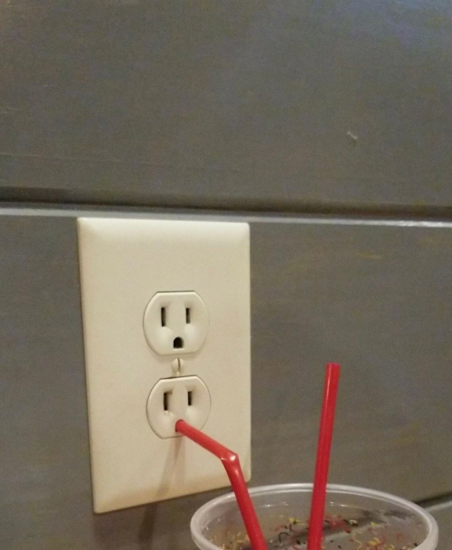

Create a Vector object that supports addition, subtraction, dot products, and norms. So, for example
var a = new Vector([1, 2, 3]);
var b = new Vector([3, 4, 5]);
var c = new Vector([5, 6, 7, 8]);
a.add(b); // should return a new Vector([4, 6, 8])
a.subtract(b); // should return a new Vector([-2, -2, -2])
a.dot(b); // should return 1*3 + 2*4 + 3*5 = 26
a.norm(); // should return sqrt(1^2 + 2^2 + 3^2) = sqrt(14)
a.add(c); // throws an error
If you try to add, subtract, or dot two vectors with different lengths, you must throw an error!
Also provide:
a toString method, so that using the vectors from above, a.toString() === '(1,2,3)' (in Python, this is a __str__ method, so that str(a) == '(1,2,3)')
an equals method, to check that two vectors that have the same components are equal
Note: the test cases will utilize the user-provided equals method.
